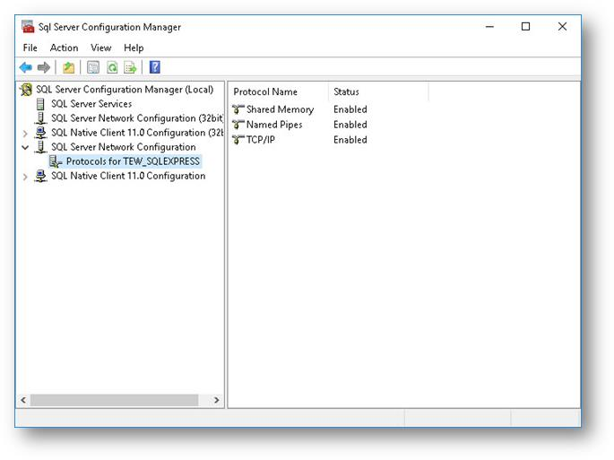
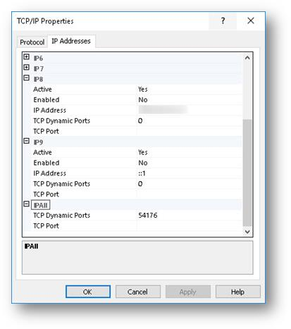
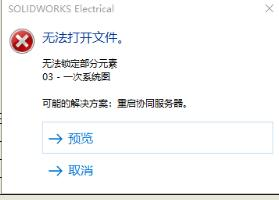

Electrical问题和方法
无法大家工程
无法打开工程，文件夹已不存在。

错误路径
设置数据库时出现：错误路径：工程文件夹。

复制图形失败
符号或图形中具有相同的图块导致无法在原理图中复制图形
A：问题现象: 复制一个符号或图形粘贴后总是显示上一个图形或者是其他图形
这是因为SWE检测到相同图块名时就会始终显示第一个图块
这时就需要对其分解和删除
NOTE：创建符号时不要使用图块
添加hosts
无法连接到协作服务器：
客户端计算机和服务器计算机不在同一子网中。但ping测试成功。
对于某些客户端计算机，您可以通过在“hosts”文件中添加服务器名称和IP地址映射来解决这个问题。遵循以下步骤:
- 转到“C:\Windows\System32\drivers\etc”。
- 找到“hosts”文件并在文本编辑器(如Notepad)中打开该文件。
- 添加一行，文本如下：”服务器IP “ “空间” “服务器名称”
对于其他客户机计算机，执行这些步骤是不够的。当服务器端使用DNS时，IPv4和IPv6 TCP/IP通信协议处于激活状态，仍然会出现此错误。
要解决这个问题，必须在服务器端关闭IPv6。确保客户端计算机和服务器计算机都使用相同的IPv4 TCP/IP通信协议。
防火墙
为了正常工作，SOLIDWORKS®电气使用许多端口和服务。为了允许正确的连接，请考虑以下配置信息: 将所有端口和服务添加到入站和出站规则中，TCP和UDP的端口都例外。
将以下服务添加到例外列表中:
- SOLIDWORKS电气协作服务器
- SQL Server([电子SQL实例])
- SQL Server浏览器
- SOLIDWORKS授权服务
添加以下端口:
- 26666-26672:用于协作服务器。这个范围可能会更高，以容纳更多的用户。
- 1433-1434: SQL server。
- 25734-25735:适用于SolidNetWork许可。
- 用于SQL实例的TCP端口，可以按如下方式确定。
要查找用于SQL实例的端口，请遵循以下步骤:
1、从开始菜单，找到并打开SQL Server配置管理器。
2、在树视图中，单击[electric SQL instance]对应的Protocols。
3、在详细信息窗格中，右键单击TCP/IP >属性，然后单击“IP地址”选项卡。
4、展开IPAll对象。如果TCP动态端口字段中出现一个数字，这意味着当服务器重新启动时，端口可能会改变。
5、要将其更改为静态端口，请从TCP动态端口字段中删除该数字，将其放在TCP端口字段中，然后单击“应用”。
6、重新启动electric SQL实例的SQL服务。
同时添加出现在IPAll字段中的端口号作为端口例外。请看下面的图片。
 没有运行SQL Server服务
- 打开Windows®“服务”应用程序。
- 在“服务”列表中，右键单击“SQL Server([实例名])”>“开始”。
3.重新启动SOLIDWORKS®Electrical应用程序。
SQL Server权限不足
如果客户端计算机在域中并且域权限不足，则可能出现此错误：Microsoft SQL Sever安装失败。
有关此问题的帮助，请联系您的IT代表。
您也可以尝试将客户端计算机从域中删除，然后安装SOLIDWORKS®Electrical软件，然后在完成安装后将计算机添加到域中。
多用户的连接问题
有多个用户连接到同一协作服务器的客户需要知道，客户端与服务器通信需要每个用户一个端口。端口26666是从任何客户机到服务器的通信端口。之后的每个端口用于服务器与每个客户端进行通信(即端口26667用于客户端1，端口26668用于客户端2，等等)。
应用程序设置中为每个用户列出的端口应该保持为26666，因为所有客户端都使用相同的端口连接到服务器。用于返回通信的备用端口是可能更改的端口，这是由服务器决定的，用户只需要确保打开了足够的端口。
如果没有打开足够的端口，客户可能会观察到它们的端口在用户断开连接和重新连接时发生变化。如果用户在断开连接后继续工作，这可能导致错误消息、崩溃和数据丢失。
无法连接TEW_APP_DATA
1、一般是客户端访问服务器 SQL Server被阻止，需确定问题是客户端还是服务器；
graph LR 问题出现在--所有人电脑-->检出服务器是否正常 问题出现在--特定电脑-->检查与服务器连接 检查与服务器连接-->ping/telnet测试 检查与服务器连接-->检查/关闭防火墙 检查与服务器连接-->检查软件应用程序设置 检出服务器是否正常-->SQL服务是否开启 检出服务器是否正常-->检查/关闭防火墙
• 服务器问题
服务器未运行。检查“SQL Server <实例> ”服务是否正在运行。打开“Control Panel（控制面板）”的“Services（服务）”部分，启动或重新启动该服务。
SQL Server 实例不包含 TEW_APP_DATA 数据库。要检查是否存在此情形，请运行 SQL Server Management Studio 并连接至安装过程上所定义的 SQL Server 实例。展开“数据库”，如果“TEW_APP_DATA”数据库不可用，则表明服务器上未安装所需的文件。
未安装向 SQL Server 实例发送广播放以及连接至该实例所需的必要文件。此类文件可能包含“SQL Server Browser（SQL Server 浏览器）”服务和“SQL Server Native Client（SQL Server 本地客户端”。
• 客户端问题
软件在错误位置找寻 SQL server。在 SOLIDWORKS Electrical 中，转到【“工具”>“应用程序设置”>“数据库”】，并检查和确保使用了正确的服务器名称。这是安装了 SQL Server® 软件的计算机或服务器的名称，后面是“\”符号，然后是 SQL Server 实例的名称。

参考：
https://www.solidworks.com/vrc/Services/bestpractices.htm
无法锁定部分元素
情况1：于其相似的情况，是由其他用户使用了该工程文件，导致新用户“无法锁定部分元素”。一般也可能提示：以下工程已被其他用户打开之类的。
符号显示